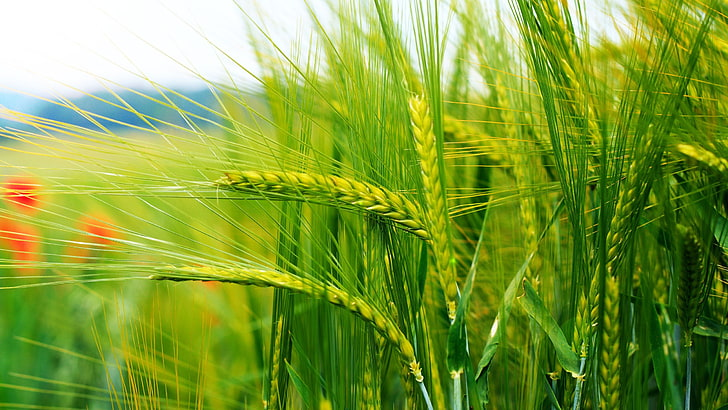
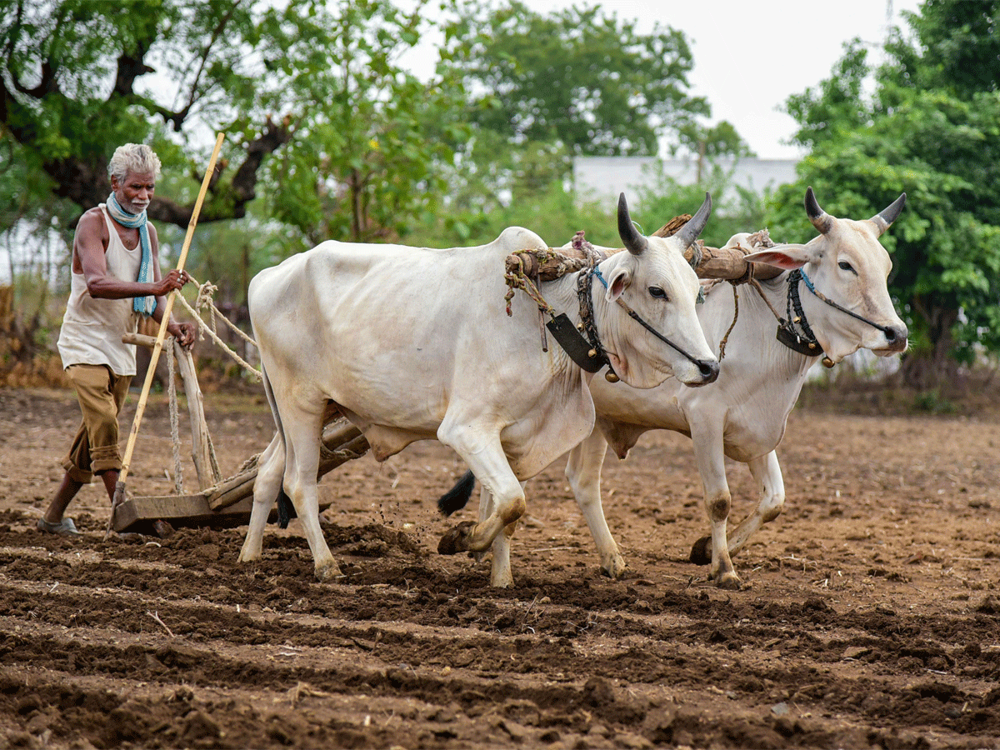
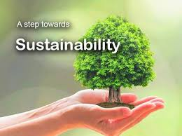
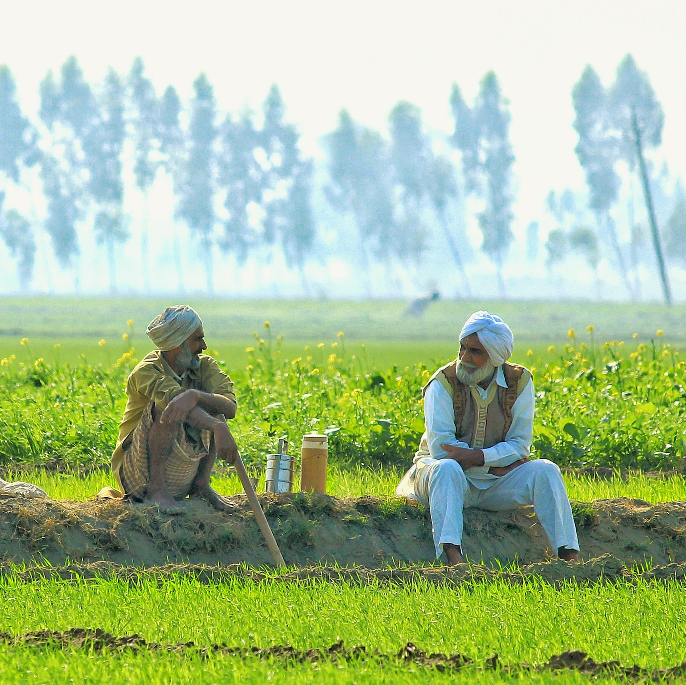
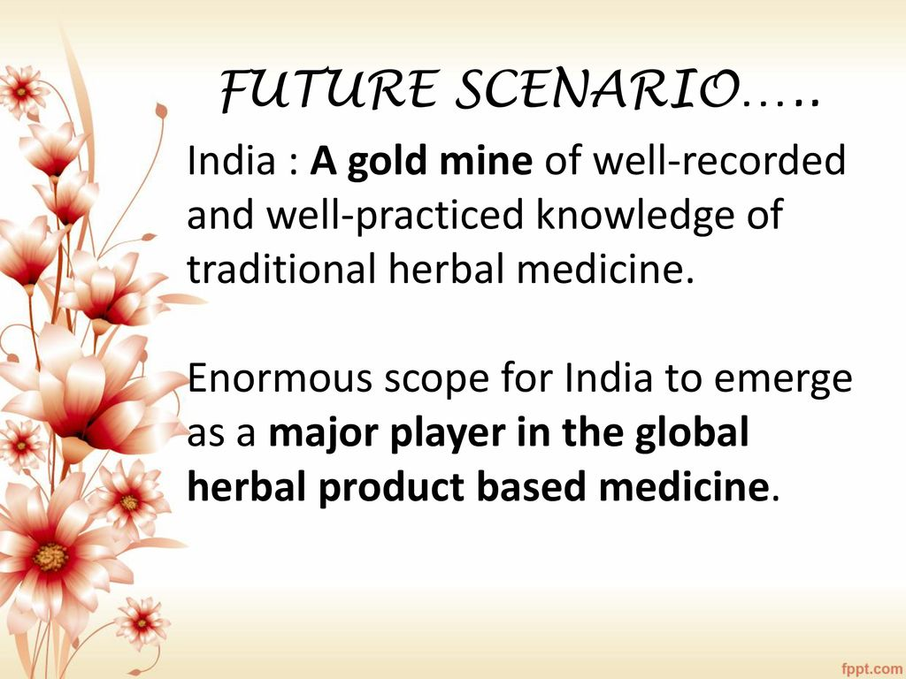
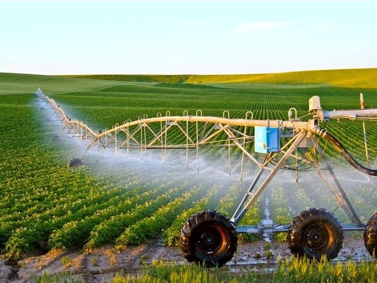

A step towards green revoluntion of India.
Agriculture is one of the major sectors of the Indian economy. It is present in the country for thousands of years. Over the years it has developed and the use of new technologies and equipment replaced almost all the traditional methods of farming. Besides, in India, there are still some small farmers that use the old traditional methods of agriculture because they lack the resources to use modern methods. Furthermore, this is the only sector that contributed to the growth of not only itself but also of the other sector of the country.
India largely depends on the agriculture sector. Besides, agriculture is not just a mean of livelihood but a way of living life in India. Moreover, the government is continuously making efforts to develop this sector as the whole nation depends on it for food. For thousands of years, we are practicing agriculture but still, it remained underdeveloped for a long time. Moreover, after independence, we use to import food grains from other countries to fulfill our demand. But, after the green revolution, we become self-sufficient and started exporting our surplus to other countries. Besides, these earlier we use to depend completely on monsoon for the cultivation of food grains but now we have constructed dams, canals, tube-wells, and pump-sets. Also, we now have a better variety of fertilizers, pesticides, and seeds, which help us to grow more food in comparison to what we produce during old times.
With the advancement of technology, advanced equipment, better irrigation facility and the specialized knowledge of agriculture started improving. Furthermore, our agriculture sector has grown stronger than many countries and we are the largest exporter of many food grains.It is not wrong to say that the food we eat is the gift of agriculture activities and Indian farmers who work their sweat to provide us this food. In addition, the agricultural sector is one of the major contributors to Gross Domestic Product (GDP) and national income of the country. Also, it requires a large labor force and employees around 80% of the total employed people. The agriculture sector not only employees directly but also indirectly. Moreover, agriculture forms around 70% of our total exports. The main export items are tea, cotton, textiles, tobacco, sugar, jute products, spices, rice, and many other items.
Although agriculture is very beneficial for the economy and the people there are some negative impacts too. These impacts are harmful to both environments as the people involved in this sector. Deforestation is the first negative impact of agriculture as many forests have been cut downed to turn them into agricultural land. Also, the use of river water for irrigation causes many small rivers and ponds to dry off which disturb the natural habitat. Moreover, most of the chemical fertilizers and pesticides contaminate the land as well as water bodies nearby. Ultimately it leads to topsoil depletion and contamination of groundwater. In conclusion, Agriculture has given so much to society. But it has its own pros and cons that we can’t overlook. Furthermore, the government is doing his every bit to help in the growth and development of agriculture; still, it needs to do something for the negative impacts of agriculture. To save the environment and the people involved in it.
India is home to over 8,000 species of medicinal plants – and they’re increasingly under threat, according to the Botanical Survey of India. Destructive harvesting has brought about depletion and scarcity of medicinal plants which are widely used for the treatment purposes and curing diseases.Forest reserve is depleting at a faster rate and procurement of medicinal plants from wild source will become a difficult task in coming years. It is a known fact that most important medicinal plants used in various classical Ayurvedic formulations have entered into endangered category. Erratic procedures while collecting medicinal plants is resulting in the expansion of the list of endangered species. Pharmaceutical companies are cropping like mushrooms without establishing any quality control laboratories.
Depletion of forest area and medicinal plants finally lead to disappearance of classical prescriptions from the clinical practices and industry is being subjected to a critical situation to process even their proprietary medicines. India has a rich abundance of ancient medicinal plants and herbs which possess immense medicinal uses which can be used for the treatment of many fatal diseases. In the awake of the 21st century , researchers and medical workers are mainly focusing on man-made drugs and medicines to cure diseases. But we are forgetting the use and importance of medicinal herbs and plants which they possess. This has decreased the importance of medicinal plants and herbs in the current era. Due to decreasing research in this field, medicinal use and treatment properties of these valuable plants which India is home to will remain unrevealed and uncovered to the medical world.
Secondly, people also lack the knowledge about the herbal plants which can be easily grown at homes and are affordable. Most people are unaware of the facts about the plants and vegetables which are rich in vitamins and minerals and helps to boost human immune system. Talking about present times, as we all are seeing the whole world is affected by the Corona pandemic which has taken away millions of innocent lives. So in this pandemic situation people needs to keep themselves safe following all the safety majors. Henceforth, people should be made aware of the herbal plants and vegetables which they can easily grow at their homes which will help in strengthening their immunity. So these plants and vegetables will be easily accessible at their homes and the need for going out to buy these vegetables will decrease to a great extent and there will be less gathering outside and social distancing will be maintained.
The third problem we are focusing upon is on improving the farming techniques and methods which farmers living in remote and rural areas of the India lack. Due to lack of knowledge of new farming and innovative techniques, these farmers continue to use old primitive and traditional methods of cultivation which in turn leaves them with less production of crops and cereals than the desired amount. Agricultural marketing still continues to be in a bad shape in rural India. In absence of sound marketing facilities, the farmers have to depend upon local traders and middleman for the disposal of their farm produce which is sold at throw-away price.
In 2008, the government brought agricultural debt-waiver and debt-relief scheme in effect to benefit over 36 million farmers. The scheme also covered direct agricultural loan to stressed farmers. However, most of such welfare programs and subsidies announced by both the central and state governments are yet to reach poor farmers, while big/wealthy landlords are hugely benefited.
The aim of our project 'MAKE IN GREEN INDIA' is bring about a green revolution in our country India and make people aquainted and aware of the importance and use of ancient medicinal plants and herbs which can used for treating many fatal diseases. We will also emphasize on the treatment techniques and traditional methods which were used by the Vaidya Gurus and Rishis in early age periods. This will make people self-dependent and they can use these plants in an efficient way to cure themselves from diseases.
Also people living in remote and rural areas who don’t have access to doctors and hospitals will be benefitted by our project. They will be able to identify medicinal plants and make use those plants from their nearby surrounding areas to treat themselves. People will be knowing about plants and vegetables they can easily grow at their homes and gardens which will keep them and their families healthy and will help in boosting their immunity.
Farmers will be benefitted in great extent by our project. They will come to know about new and latest farming techniques which they can implement in their cultivation and which are easily affordable. They will learn new ways of farming skills which will help them yield crops in greater amount and will also be updated about the new reforms and schemes which the Government releases from time to time.
Each and every people of our country and also people living in other parts of the world can access the contents and details about the 'Medicinal plants','Indoor plants which boosts our immunity' and 'the new and lastest-technologies and techniques of Farming' provided on the website. So, a green change of ‘New and Healthy India’ which is the aim and mission of our project is attained.